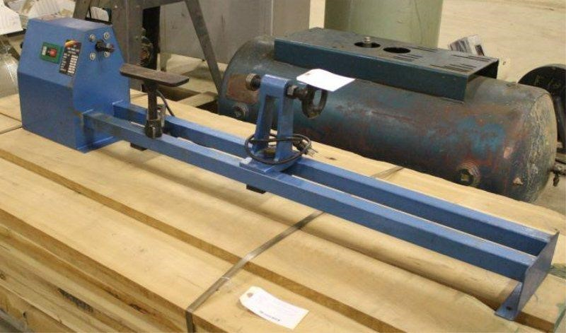

wood lathes revision 3750
^ Projects infobox ^^
| image | Lathe.scad.png |
| designer | [[user:tim|Timothy Schmidt]] |
| date | 2013 |
| tools | [[wrenches|Wrenches]] |
| parts | [[frames|Frames]], [[nuts|Nuts]], [[bolts|Bolts]], [[end_caps|End caps]], [[plates|Plates]] |
| techniques | [[tri_joints|Tri joints]], [[shelf_joints|Shelf joints]] |
Challenges
Approaches

Development targets
- CNC metal lathe w/ tool changer and grinder attachment - allows for production of gears